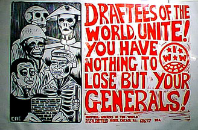

Submitted on Thu, 08/10/2006 - 8:43pm
 Mansoor Ossanlou, the jailed president of Tehran’s bus workers’ union (the Syndicate of Workers of Tehran and Suburbs United Bus Company), was released at 3.30 pm local time today, 9th August, after spending over seven and a half months in prison. He was warmly greeted by his family and colleagues.
Mansoor Ossanlou, the jailed president of Tehran’s bus workers’ union (the Syndicate of Workers of Tehran and Suburbs United Bus Company), was released at 3.30 pm local time today, 9th August, after spending over seven and a half months in prison. He was warmly greeted by his family and colleagues.
Ossanlou’s release comes following seven months of struggle without let up by Tehran’s bus workers and the massive international solidarity that took shape for his release over this period. He was jailed for organising the bus workers and defending their rights. His release is a clear victory for the workers and people in Iran.
In a statement released today, WPI congratulated Mansoor Ossanlou, his family, the bus workers and all trade unions, organisations and individuals who fought in the great campaign for his release. “Ossanlou was freed from prison by the bus workers and all those fantastic people in Iran and outside Iran who fought hard and put pressure on the Islamic Republic”, the statement said. It called for the unconditional release of all political prisoners in Iran, the recognition of the bus workers’ union and an end to the persecution of labour activists.
Ends.
----------------------------------------------------------------------------------
International Labour Solidarity Committee of the
Worker-communist Party of Iran
Co-ordinator: Shahla Daneshfar (shahla_daneshfar@yahoo.com)
Public Relations: Bahram Soroush (b.soroush@ukonline.co.uk)
www.kargarn.org www.wpiran.org
http://lnn.laborstart.org/more.php?id=778_0_1_0_M
Submitted on Tue, 08/08/2006 - 3:52am
Disclaimer - The following is an editorial by members of the Bay Area; it is not currently the official position of the IWW.
By Dean Dempsey - Bay Area General Membership Branch, IWW
The Industrial Workers of the World was the first American union to truly welcome all workers, as equals, regardless if they were immigrants, women, or African Americans, with our organizational structure free of bias and segregation. We have always organized industrially, as a class, emphasizing the importance and potential of cross-cultural, ethnic, and national relationships. Some of the most influential members of the IWW have been immigrants, women, and people of color, such as Ricardo Flores Magón, Mother Jones, Carlo Tresca, Lucy Parsons, Ben Fletcher and even the token Joe Hill. The tradition of this commitment to include all workers carries on to contemporary union organizers of all branches of our union, from all parts of the globe.
Submitted on Tue, 08/08/2006 - 3:43am
Disclaimer - The following is an editorial by members of the Bay Area; it is not currently the official position of the IWW.
By Zapatita - Bay Area General Membership Branch, IWW
 The Zapatista Army of National Liberation, (EZLN), has been fighting for democracy, liberty and justice in the Southern Indigenous lands in Mexico well before 1994. Today, the Zapatistas are struggling for more than the indigenous people in Chiapas, but for all those across the world who have been exploited and robbed by the rich and the bad governments that serve them. Like the I.W.W., the EZLN is a humanitarian internationalist organization, who fight for the "humble and simple" people, the common, everyday working folks who belong to "civil society", the majority who do not belong to political parties.
The Zapatista Army of National Liberation, (EZLN), has been fighting for democracy, liberty and justice in the Southern Indigenous lands in Mexico well before 1994. Today, the Zapatistas are struggling for more than the indigenous people in Chiapas, but for all those across the world who have been exploited and robbed by the rich and the bad governments that serve them. Like the I.W.W., the EZLN is a humanitarian internationalist organization, who fight for the "humble and simple" people, the common, everyday working folks who belong to "civil society", the majority who do not belong to political parties.
Submitted on Tue, 08/08/2006 - 3:10am
Adopted August 1, 2006 by the Twin Cities General Membership Branch of the Industrial Workers of the World (IWW)
I. Whereas the IWW has always stood for international solidarity and against all exploitation, oppression and attempts to divide our class by war,
II. Whereas the State of Israel’s U.S.-backed aggression against the people of Lebanon and Palestine has caused the murder of hundreds of working-class civilians (including many children), the displacement of hundreds of thousands, and the destruction of communities and infrastructure,
III. Whereas this war - like the rest of the so-called “War on Terrorism” will not bring security to working people in any country, but only more violence and repression,
Submitted on Sun, 06/25/2006 - 7:49am
PRESS RELEASE from Naftana - UK Support Committee for the General Unionof Oil Employees Iraq
OIL UNION BANK ACCOUNT FROZEN
IRAQI GOVERNMENT ATTACKS OPPONENTS OF OIL PRIVATISATION
We have just confirmed reports that the Iraqi regime has frozen all the bank accounts of the Iraqi oil workers' union, both abroad andwithin Iraq.Wave of anti-union activity by government The Iraqi regime's decision comes in the wake of a series of anti-union measures, including the disbanding of the council of the lawyers' union, freezing the writers' union accounts and the September 2005 decree making all trade union activity illegal.